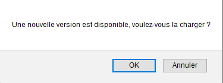

Bien que l'entièreté de ce chapitre n'est pas spécifique aux PWA, les notifications jouent un rôle essentiel dans la beauté de celles-ci
Comme pour n'importe quel site, nous aurons ici besoin de l'autorisation d'envoyer des notifications à vote navigateur, veuillez donc accepter la demande de droit afin que la démonstration fonctionne
Prenons le cas de figure suivant :
Vous consultez régulièrement votre PWA préféré et en haut de celle-ci vous pouvez lire "Nouvelle fonctionnalité bientôt disponible !"
Vous attendez donc avec impatience que cette nouvelle fonctionnalité arrive, de par son caractère fort pratique. Plusieurs mois passent et malheureusement, toujours pas de nouvelle fonctionnalité disponible et le message en haut de votre PWA est toujours là.
Un jour, vous vous rendez sur le site sans passer par la PWA installé sur votre téléphone et là... La fonctionnalité est disponible ! Miracle !
Le jour suivant, vous vous rendez sur l'application, et là... Plus de fonctionnalité et d'autres choses ont disparu...
Vous vous rendez donc compte que votre PWA ne se met donc pas à jour.
La réponse est assez simple : les PWA sont stockés dans le cache de votre navigateur, tant que ce cas n'est pas vidé, le site ne sera pas à jour
C'est l'un des pièges des PWA !
Afin de palier à ce problème, Angular a mis en place une solution clé en main pour palier à ce problème : SwUpdate
Cette fonctionalité agit sur le service worker afin de lui demander de regarder si une nouvelle version du site est disponible
Si par exemple, vous effectuez une modification dans l'HTML de ce site et que vous buildez à nouveau le projet en production ( ng build --prod ), une notification en haut de la page devrait arriver peu de temps après pour vous notifier qu'une nouvelle version du site est disponible !
Ce qui permet à l'utilisateur d'utiliser constamment la dernière version en ligne
D'ailleurs, peu importe si l'utilisateur utilisait la PWA en mode hors ligne puis récupère soudainement une connexion internet et qu'une nouvelle version a été mise en ligne entre temps, l'utiliteur sera tout de même notifié de la nouvelle version !